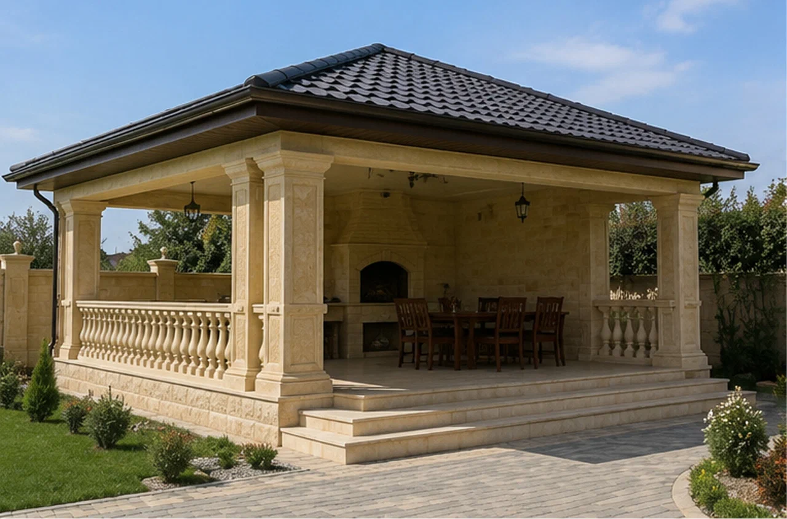
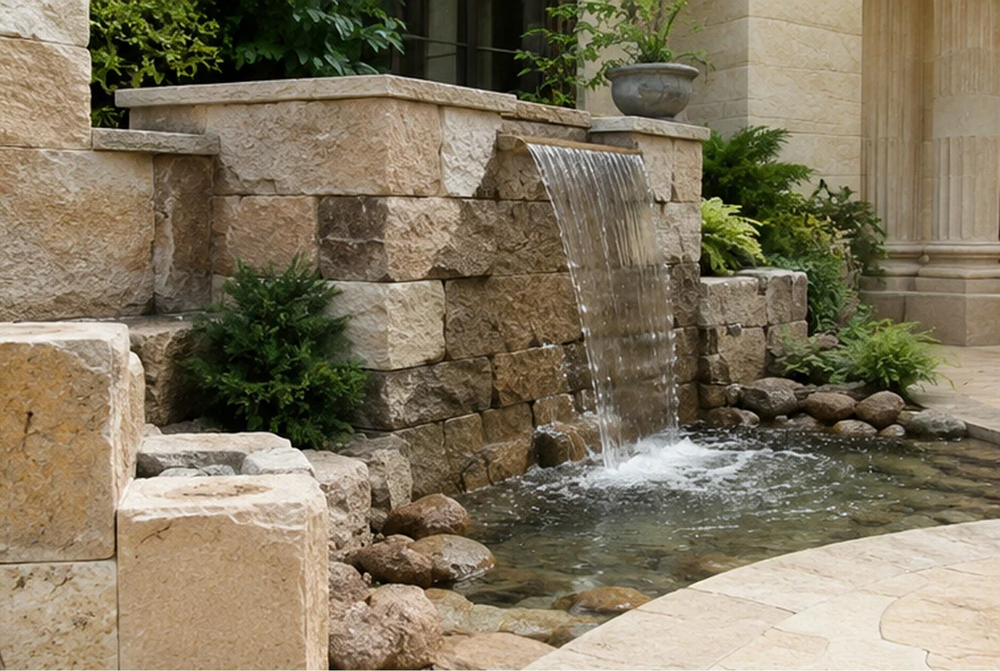
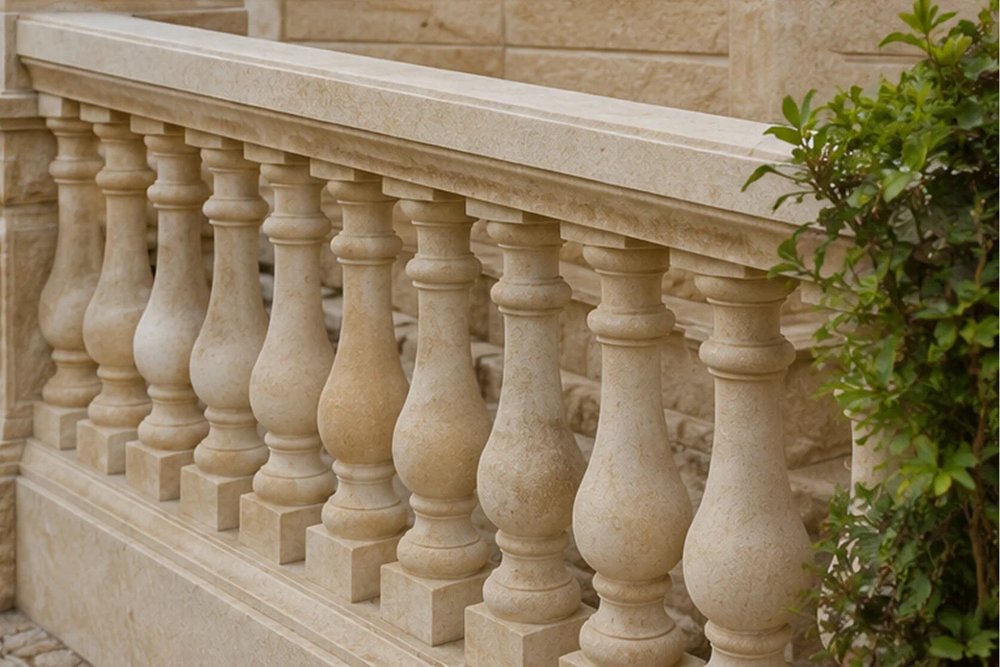

01 / СВЕТЛЫЙТёплая классика
Мягкие песочные оттенки для светлых фасадов и выразительных объёмов.
Подбираем фактуру под дом и берём на себя весь путь — от поставки до аккуратного монтажа.
Природная палитра и живая фактура делают каждый фасад индивидуальным. Поможем подобрать оттенок и формат облицовки, чтобы камень поддерживал архитектуру дома.

01 / СВЕТЛЫЙМягкие песочные оттенки для светлых фасадов и выразительных объёмов.

02 / ФАКТУРНЫЙЕстественная слоистость камня добавляет фасаду глубину и рельеф.

03 / АКЦЕНТНЫЙКонтрастные решения для цоколя, входной группы и архитектурных акцентов.
Подготовка основания, подбор камня и монтаж с учётом архитектуры здания и особенностей материала.
Износостойкая отделка нижней части дома с аккуратными примыканиями и долговечным результатом.
Обрамление окон и дверей, угловые элементы и каменные детали, подчеркивающие архитектуру.
Элементы натурального камня в интерьере. Также прорабатываем мощение дорожек природным камнем.
Природный камень не выходит из моды.Подобрать решение ↗
Он становится частью дома.